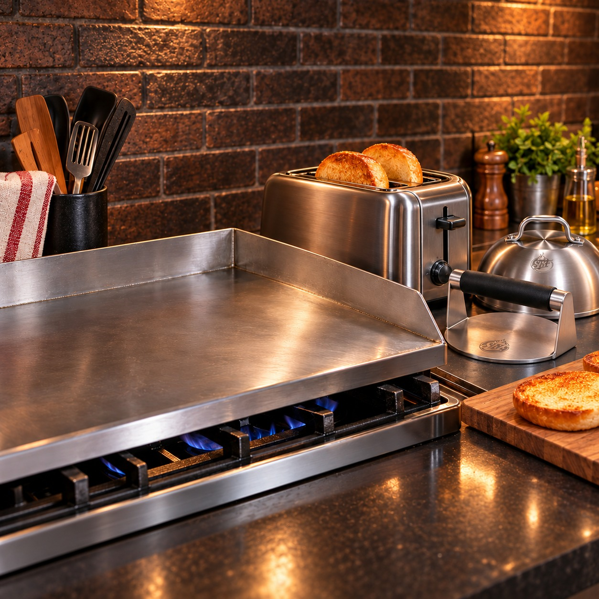
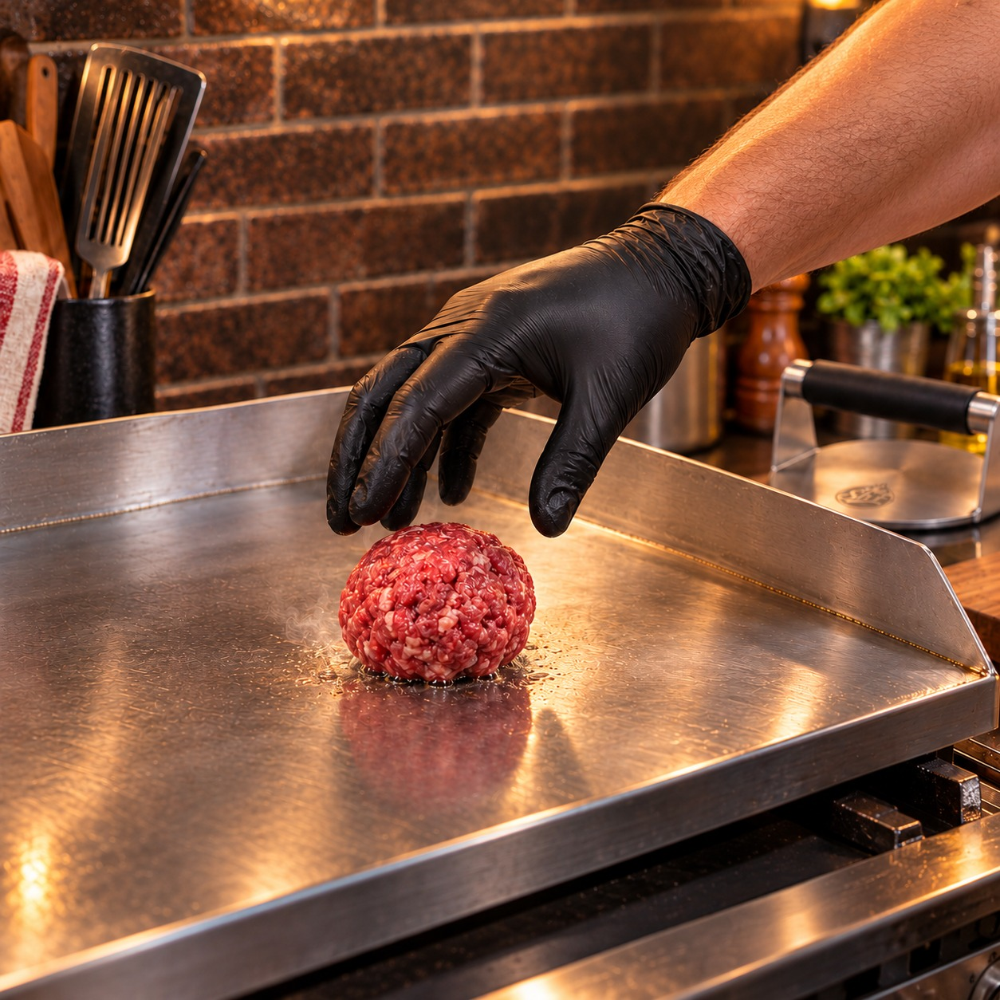
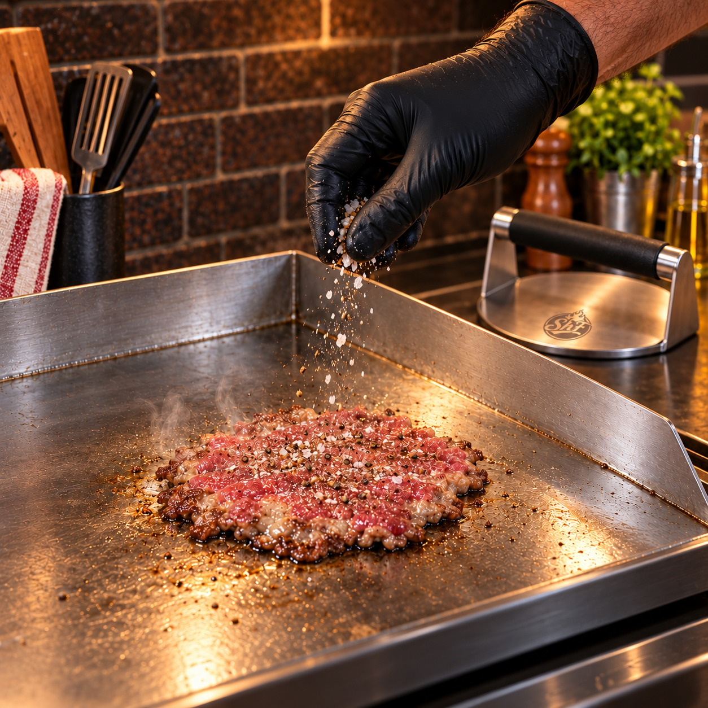
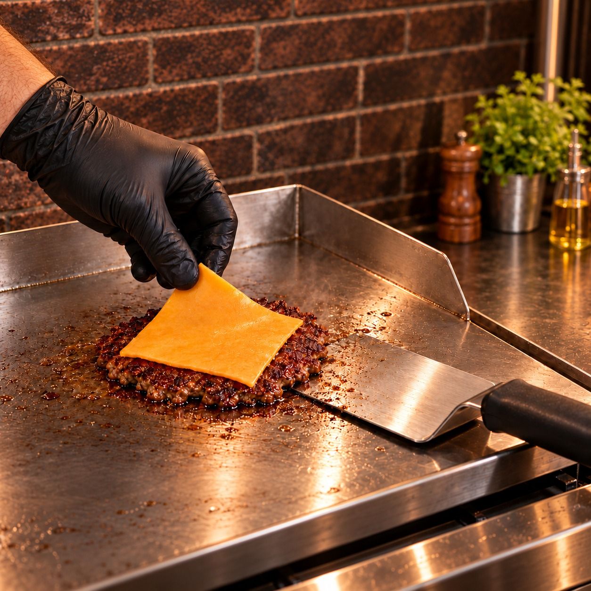
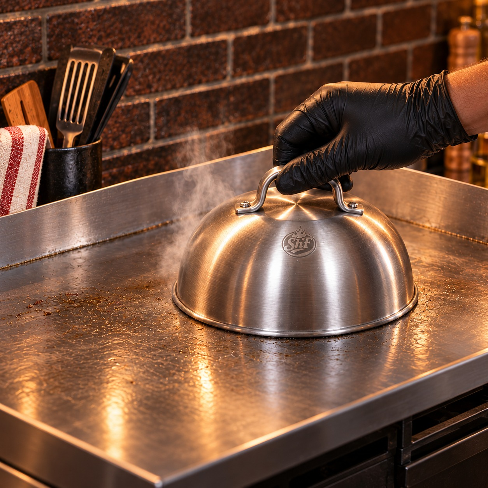
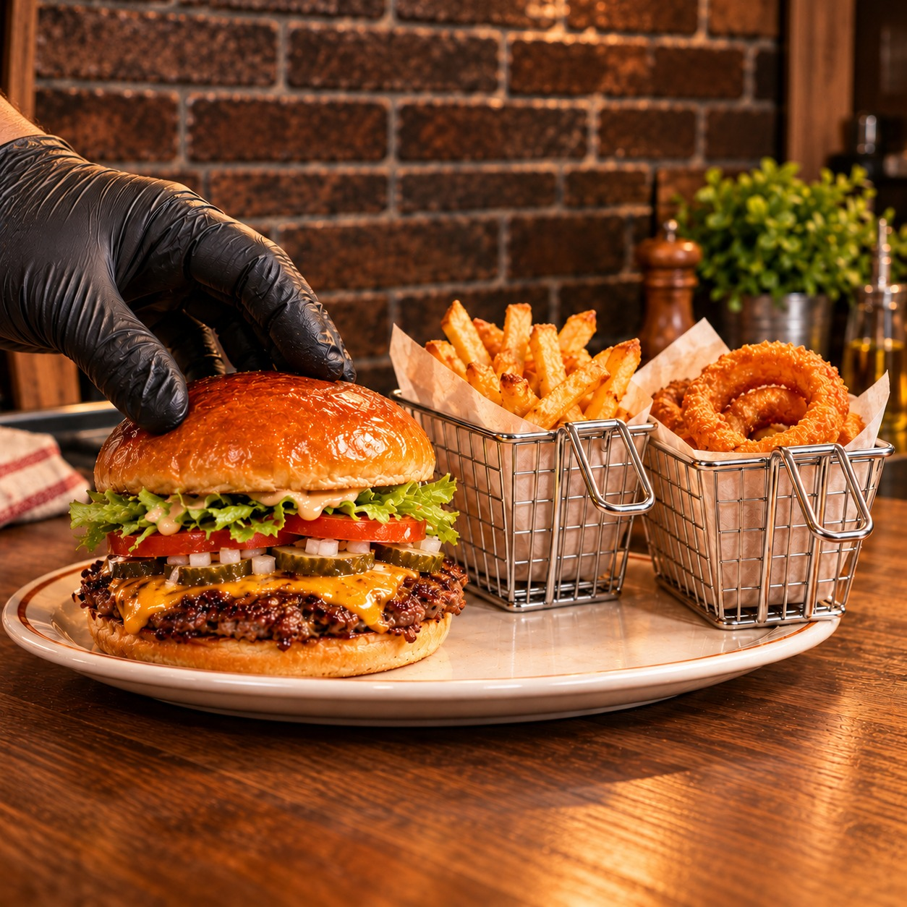
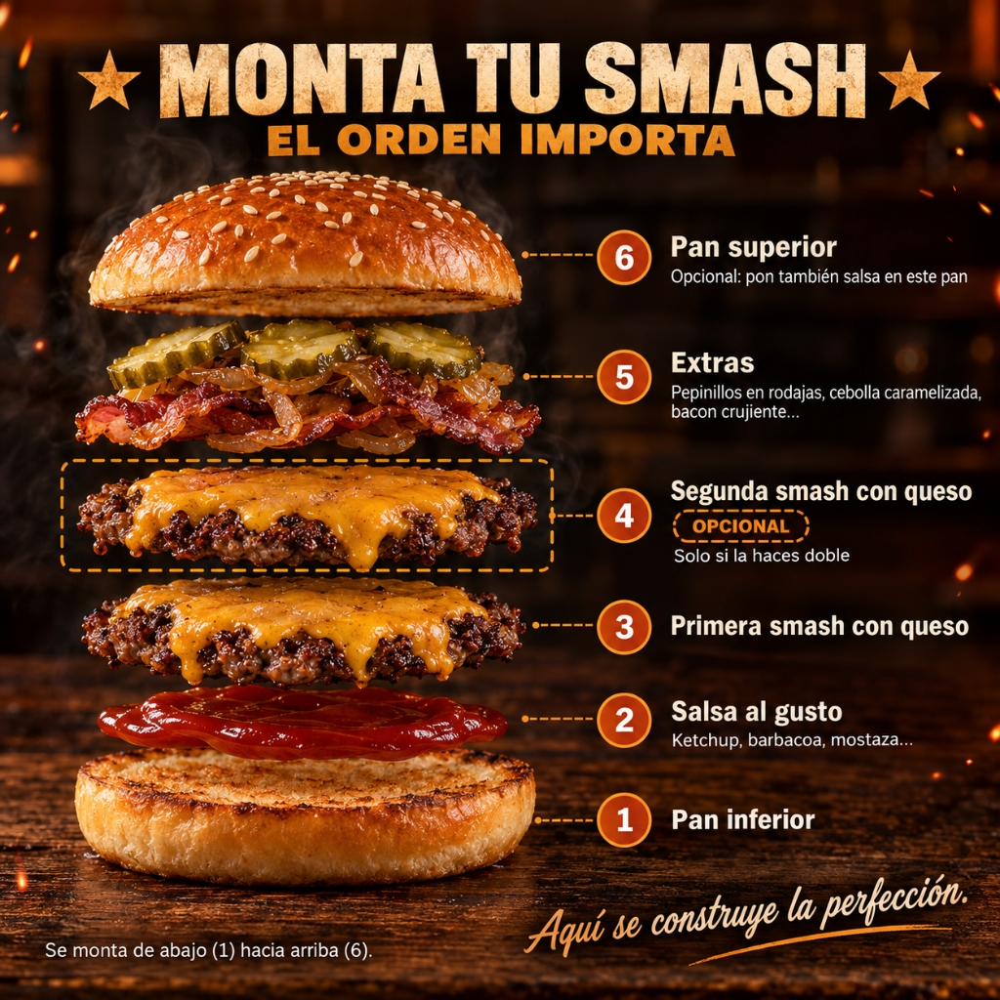

DE LA PLANCHA
AL PRIMER BOCADO
Un proceso simple para lograr burgers con costra, jugosidad y queso perfectamente fundido
¡Bienvenido al club de la costra perfecta! ¡Ya tienes tu kit! Es hora de encender el fuego y empezar a smashear.
Esta guía exclusiva ha sido diseñada para que saques el 100 % de provecho a cada utensilio de tu nuevo kit SmashFire desde la primera hamburguesa. Domina el calor, aplica la presión exacta y disfruta en casa de una experiencia al más puro estilo American Diner.
TU PRIMERA SMASH · LA CLASSIC SMASH
Tu primera Smash Burger perfecta
Ingredientes:
-
Carne: 1 bola de carne picada de vacuno de 80–90 g (80 % carne / 20 % grasa)
-
Pan: 1 pan brioche
-
Queso: 1 loncha de queso americano
-
Salsa: Al gusto: ketchup, barbacoa, mostaza…
-
Extras: Pepinillos en rodajas, cebolla caramelizada, bacon crujiente…
-
Para sazonar: Sal y pimienta
DE LA PLANCHA AL PRIMER BOCADO
El paso a paso:
Calienta la plancha y tuesta el pan
Precalienta la plancha o sartén de acero inoxidable durante varios minutos. Mientras la plancha se calienta, tuesta el pan brioche en la tostadora y resérvalo.

Coloca la carne
Pon la bola de carne, recién sacada de la nevera, sobre la plancha.

El Momento Smash
Aplasta con fuerza y, sin levantar la smashadora, presiona los bordes durante 10 segundos para crear esa costra crujiente y caramelizada.

Salpimenta
Añade sal y pimienta justo después del smash.

Voltea y añade queso
Cuando aparezca una costra oscura y crujiente, despega la carne con la rasqueta, dale la vuelta con la espátula y coloca una loncha de queso sobre la smash.

Usa la campana
Cubre la carne con la campana durante 30–40 segundos. El vapor fundirá el queso de forma uniforme. Pasados los 30 segundos, levanta la campana y comprueba: si el queso aún no se ha fundido, tápala unos segundos más.

Monta y sirve
Monta tu smash burger siguiendo el orden del bloque «Cómo montar tu Smash Burger». Sirve las patatas y los acompañamientos en las cestas con el papel antigrasa.


CONSEJOS PRO SMASHFIRE
Doce reglas de oro para dominar el fuego, el acero y la costra perfecta.
Una smash se hace en un par de minutos. Ten el pan tostado, el queso, la salsa y los extras a mano antes de poner la carne.
Usa carne con un 20 % de grasa. La carne magra queda seca y no forma la misma costra: la grasa es la que se carameliza contra la plancha.
Forma las bolas sin amasar ni compactar la carne. Cuanto más suelta, más jugosa quedará.
Usa una plancha o sartén de acero inoxidable, nunca antiadherente. El antiadherente impide que la carne se agarre y forme la costra, no está pensado para temperaturas tan altas y la rasqueta y la espátula lo rayarían.
Saca la carne de la nevera justo antes de cocinarla y ponla sobre la plancha muy caliente y sin aceite: la carne necesita contacto directo con el acero para crear la costra, y su propia grasa hace el resto.
Para saber si la plancha está lista, echa unas gotas de agua sobre la superficie seca. Si chisporrotean y se evaporan al momento, aún le falta calor. Si forman bolitas que se deslizan por la plancha sin evaporarse, está lista. Antes de poner la carne, asegúrate de que no queda agua.
Usa el papel antigrasa en el primer aplastado: la smashadora aún está fría y la carne tiende a pegarse. Cuando la smashadora coge temperatura, la carne ya no se pega y el papel deja de ser imprescindible.
Aplasta una sola vez y no levantes la smashadora hasta terminar de presionar los bordes durante 10 segundos. Si vuelves a aplastar después de dar la vuelta a la carne, pierde sus jugos.
Si salas la carne antes, la sal le quita jugo y la compacta, y la costra no se forma igual. Sálala justo después del smash, por la cara de arriba.
No muevas la carne hasta darle la vuelta. Cuando veas los bordes dorados y crujientes, es el momento.
Despega la carne con la rasqueta, raspando pegado a la plancha, y dale la vuelta con la espátula. Así te llevas toda la costra con la carne.
Antes de la siguiente smash, retira los restos con la rasqueta. Los trozos quemados amargan y dificultan la costra.
ÚNETE A LA COMUNIDAD SMASHFIRE
¿Acabas de hacer tu primer smash burger con tu kit? ¡Sube tu foto o reel, etiqueta a nuestra cuenta oficial y compártelo con nosotros!
Etiqueta a @smashfireoficial en tus publicaciones para aparecer en nuestros destacados oficiales.
CUIDADO Y MANTENIMIENTO 304
Tu kit de acero inoxidable, como el primer día.
LO QUE SÍ DEBES HACER
LO QUE NUNCA DEBES HACER
SOLUCIÓN DE PROBLEMAS (FAQ)
Respuestas a los problemas más comunes al preparar tus primeras smash burgers en casa.
Suele pasar en el primer aplastado, cuando la smashadora aún está fría. Coloca el papel antigrasa del kit entre la bola de carne y la smashadora. Cuando la smashadora coge temperatura, la carne deja de pegarse y el papel ya no es imprescindible.
Casi siempre es porque la plancha no estaba lo bastante caliente o tenía aceite. Calienta bien la plancha, sin aceite, y deja que la carne toque directamente el acero. Para saber si está lista, haz la prueba de la gota (Consejo Pro nº 6).
Usa carne con un 20 % de grasa, como aguja o picaña. Aplasta solo durante los primeros 10 segundos y no vuelvas a aplastar después de darle la vuelta.
No es recomendable. El antiadherente no está pensado para temperaturas tan altas ni para la presión de la smashadora, y la rasqueta y la espátula lo rayarían. Usa una plancha o sartén de acero inoxidable.
Solo si tiene una plancha lisa de acero inoxidable. Sobre una parrilla, la carne se cuela entre las rejillas y no se forma la costra.
BIBLIOTECA DE RECETAS SMASHFIRE
Ya dominas la Classic Smash. Ahora, a por más.
Próximamente…
Estamos preparando nuevas recetas para que saques todo el partido a tu kit. Muy pronto las encontrarás aquí.
MATERIALES DE ALTA CALIDAD
Todas las piezas del kit son de acero inoxidable apto para uso alimentario. Se han sometido a ensayos de laboratorio de migración de metales pesados según la normativa europea de materiales en contacto con alimentos (Reglamento CE 1935/2004), con resultado apto.
Acero inoxidable 304
Smashadora, campana, espátula y rasquetaResistente al calor, a la corrosión y al uso diario. Sin recubrimientos que se desprendan con el uso.
Acero inoxidable 201
Cestas estilo DinerEnsayadas y aprobadas como cestas para servir: úsalas solo para presentar patatas y acompañamientos, nunca para freír ni en el horno.
¿TIENES ALGUNA DUDA?
Estamos aquí para ayudarte. Si tienes cualquier pregunta sobre el uso de tu kit, su cuidado o quieres compartir una idea de receta, escríbenos.
¿Algún problema con tu pedido o con alguna pieza? Cuéntanoslo y lo solucionamos.
Te responderemos personalmente lo antes posible.